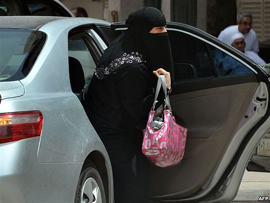

پذيرش > اخبار > شرکت در انتخابات، آسانتر از داشتن حق رانندگی در عربستان


 شرکت در انتخابات، آسانتر از داشتن حق رانندگی در عربستان شرکت در انتخابات، آسانتر از داشتن حق رانندگی در عربستان
6 مهر 1390 - - نسخه قابل چاپ
رادیو فردا: روز يکشنبه، پادشاه عربستان سعودی، در سخنرانی کوتاه از تصميمی تاريخی سخن گفت... زنان اين کشور از انتخابات آينده، حق رای، حق عضويت در مجلس شورا و حق کانديداتوری در انتخابات محلی دارند.
فعالان حقوق زنان و مدافعان حقوق بشر درمقابل اين خبر برخوردی دوگانه داشته اند. از سويی کسی نمی توانست از چنين تصميمی ابراز خوشحالی نکند، اما از سوی ديگر، منتقدان بر اين باورند که اين تنها آغاز راهی بسيار طولانی است.
در همين باره هانا کاويانی گفتگويی داشته با نبيلا حمزه Nabila Hamza فعال حقوق زنان تونسی و رييس انستيتوی «برای ِآينده» در اردن، ارگانی غير دولتی برای پيشبرد دمکراسی و حقوق بشر. خانم حمزه، ابتدا می گويد واکنش اوليه اش به اين خبر چه بوده است :
اولين واکنش من به اين خبر، خوشحالی بود، خوشحالی از اينکه بالاخره يک اتفاقی در اين کشور افتاد. پس از آغاز بهار عربی ، عربستان سعودی همانند آخرين قلعهی ايستاده محافظه کاری در ميان کشورهای عربی است.
من دوستان و همکاران زيادی از عربستان سعودی دارم، زنانی که واقعا برای احقاق حقوقشان در حال مبارزه هستند. شما بايد بدانيد که عربستان سعودی يکی از بالاترين ردهها در ميزان زنان تحصيلکرده را دارد. اما اين زنان تحصيلکرده در حالی در اين کشور هستند، که آنها به عنوان شهروند به رسميت شناخته نمی شوند.
برای همين چنين تصميمی از سوی پادشاه عربستان، اقدامی بسيار مهم برای زنان سعودی است که برای حقوق برابر تلاش می کنند اما در عين حال نبايد فراموش کنيم که اين حق رای نه برای اين انتخابات بلکه برای انتخابات بعدی به آنها داده شده، درحالی که در روزهای آينده شاهد برگزاری انتخابات شوراها در عربستان خواهيم بود.
من مطمئنم که زنان سعودی هم به اين موضوع واقف هستند که راه درازی در پيش دارند. همچنين نبايد فراموش کنيم که اين حق رای درحالی به زنان داده شده که تبعيض های بيشماری در زندگی روزمرهی زنان سعودی همچنان پابرجاست.
دقيقا سوال همين جاست. در کشوری که زنان اجازهی خروج از منزل بدون اجازه ی مرد خانواده يا حق رانندگی ندارند، به نظرتان اعطای حق رای به زنان امری متناقض نيست؟
درسته. به غير از اين موارد می توانم اينها را هم اضافه کنم که زنان نمی توانند در رشته هايی که مردانه خوانده می شود تحصيل کنند، يا در برخی رشته های ورزشی فعاليت کنند درنتيجه، درست است، وضعيت امروز متناقض است.
به نظر من اين تصميم، يکی از نتايج بهار عربی در چند ماه گذشته بوده است. و يکی از اقدامات اصلاحگرانهی دولت عربستان است، چرا که حاکميت اين کشور متوجه شده که بايد تغييراتی ايجاد کند. نه تنها در حوزهی زنان بلکه در همه حوزهها. اما برای فهميدن تناقض، بايد به يک نکته اشاره کنم. آن هم اينکه، زنان در عربستان، تنها با قوانين جاری مشکل ندارند. اما مشکل بزرگتری دارند و آن اسلامگرايان سلفی در اين کشور است.
من فکر می کنم که دولت عربستان به اين نتيجه رسيده که به جای اينکه از مواردی چون رانندگی زنان شروع کند، که مطمئنا با مخالفت شديد اسلامگرايان افراطی روبرو ميشد، به زنان حق رای بدهد.
بسياری از دولتمردان عربستان سعودی، موافق مشارکت زنان در عرصه اجتماعی، حداقل تا حدی هستند، اما اينها با فشار شديد سلفیها روبرو می شوند. در نتيجه من فکر می کنم با چنين حرکتی، دولت عربستان تا حدی سلفی ها را دور زده تا درگيری مستقيمی با آنها پيدا نکند.
شما دربارهی ميزان بالای تحصيلات زنان در عربستان گفتيد. به نظرتان اين تحصيلات زنان، تا چه حد به جامعه بازميگردد و به احقاق حقوق آنها کمک خواهد کرد؟
ابتدا بايد بگويم که اين موضوع تنها به عربستان سعودی ختم نمی شود، اما در اين کشور بيشتر محسوس است.
من تحقيقی برای سازمان يونسکو انجام می دادم دربارهی زنانی که تحصيلات دانشگاهی دارند، و اين تحقيق نشان میداد که کشورهای عضو شورای همکاری خليج فارس، بيشترين تعداد زنان تحصيلکرده در دانشگاه را دارند، چراکه زنان اين کشورها به دليل موقعيت مالی از امکانات رفاهی بيشتری برخوردارند و در عين حال فعاليت اجتماعی ای ندارند، بنابراين تصميم ميگيرند در زمانی که دارند، درس بخوانند.
درعين حال بايد در نظر داشته باشيم که در اين کشورها تفکيک جنسيتی کامل وجود دارد. همچنين دختران سعودی را در بسياری از دانشگاههای مطرح دنيا در حال تحصيل می بينيم. اما مشکل اينجاست که وقتی اينها فارغ التحصيل می شوند، و می خواهند وارد بازار کار شوند، موانع بی شماری از سلفی ها تا سنت های خانوادگی ، سد راه آنها می شوند.
البته اين درحال تغيير است... و زنان سعودی حتی در حال ايجاد شغلهايی برای خود هستند تا اين موانع را پشت سر بگذارند.
با اين اوصاف اگر بخواهيم نتيجه بگيريم، آيا شما چنين اقداماتی را از سوی دولت عربستان سعودی، مثبت ارزيابی میکنيد؟
صددرصد. ما فکر میکنيم که اين اقدامی مثبت است. اين يک نقطه آغاز است و کسی ديگر نمی تواند آن را متوقف کند. و من مطمئنم که اين زنان تنها نيستند و مردان بسياری در عربستان همراه آنها برای احقاق حقوق برابر آنها تلاش میکنند. آنچه من ميتوانم به زنان سعودی بگويم اين است که «پيش برويد ، جهان با شماست و ان شاالله در آيندهای نزديک شما پيروز خواهيد شد».
ارسال به
بالاترین
،
توییتر
،
فریندفید
،
فیسبوک
در همين بخش :
 پروین ذبیحی برنده جایزه حقوق بشری سازمان غيردولتى اتريشى سودويند شد پروین ذبیحی برنده جایزه حقوق بشری سازمان غيردولتى اتريشى سودويند شد
پخش کارت پستال و بروشور در روز جهانی زن در تهران
تمدید زمان برای امضای بیانیهی جمعی از فعالان زن به مناسبت هشت مارس
مجوزی که در نطفه خفه شد
بیش از 2000 امضا در اعتراض به تبعیض های آموزشی به مجلس تحویل داده شد
ديگر بخش ها :
طرح یک میلیون امضا
|
مقالات
|
سایت نوشته ها
|
اخبار
|
گزارش كمپين
|
گفت و گو
|
علیه سکوت
|
كوچه به كوچه
|
نامه های شما
|
گزارش ویژه
|
گفتگو با اعضا
|
ویژه سالگرد کمپین
|
تصویر برابری
|
دل آرام علی
|
تریبون
|
مقالات
|
تاریخ شفاهی
|
خارج از چارچوب
|
کتابخانه
|
درباره کمپین
|
کمپین در شهرها
|
کمپین در بند
|
صدای تغییر
|
ویژه 22 خرداد
|
لایحه حمایت از خانواده
|
گالری
|
عشا مومنی
|
امیر یعقوبعلی
|
خدیجه مقدم
|
راحله عسگری زاده و نسیم خسروی
|
پروین اردلان،جلوه جواهری، مریم حسین خواه، ناهید کشاورز
|
زینب پیغمبرزاده
|
سعیده امین، سارا ایمانیان، محبوبه حسین زاده، ناهید کشاورز و همایون نامی
|
احترام شادفر
|
نسیم سرابندی زاده،فاطمه دهدشتی
|
وبلاگ مهمان
|
پرونده خرم آباد
|
دستگیری ها
|
مریم مالک
|
پرستو اللهیاری
|
مهرنوش اعتمادی
|
سمیه رشیدی
|
Other Languages
|
همراهان
|
«فراخوان کمپین ده روز با بهاره هدایت»
| English
|